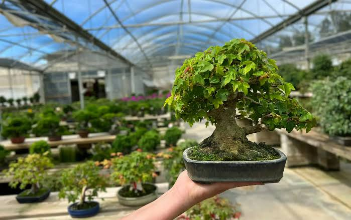
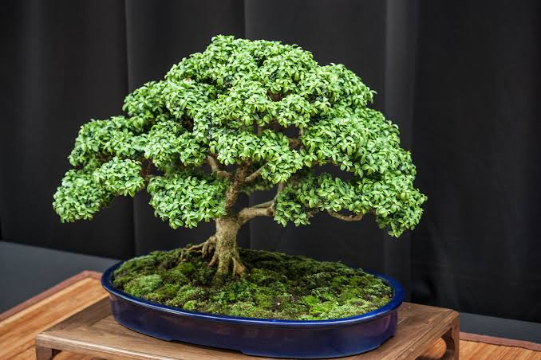

PLANTAS EN MINIATURA

Es un tipo de arte con las plantas para hacerlas pequeñas.
Esto inicia en lugares asiáticos, donde indica que trae abundancia.
SU PRECIO REAL
El precio real de un bonsái varía desde los S/ 100 hasta más de S/ 2,000, dependiendo principalmente
de los años de trabajo, la especie y el diseño del árbol.

LO MEJOR DEL BONSÁI
Ver cómo un árbol tan pequeño se adapta, cicatriza sus marcas de poda y logra florecer a pesar
del espacio limitado en su maceta, es a menudo una lección visual de resistencia y fortaleza.
En resumen, lo más valioso de un bonsái no es solo cómo decora un espacio, sino el vínculo que
formas con él, cómo te hace sentir y lo que te enseña a lo largo del tiempo.